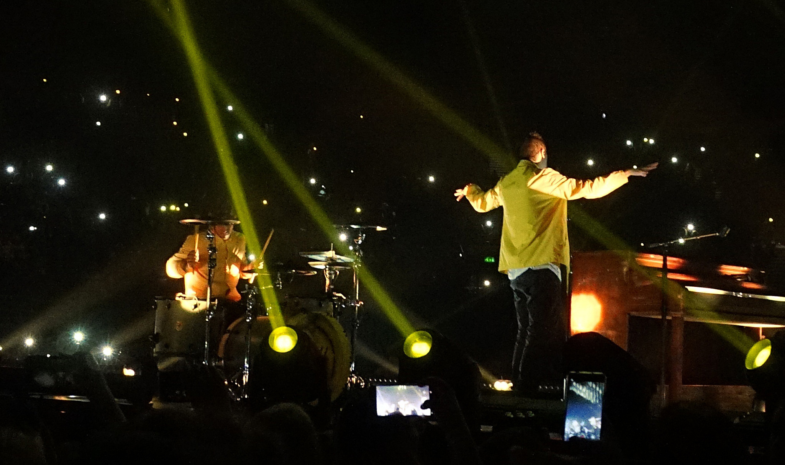
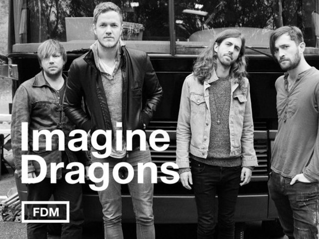

Найкращі музичні гурти
На этом сайте вы сможете посмотреть мой топ 3 исполнителей последних десяти лет.
Twenty one pilots
Американский дуэт из Колумбуса, штата Огайо. Сформировался в 2009 году.
Состоит из двух участников: Тайлер Джозеф - солист группы, Джош Дан - барабанщик.
На данный момент самой популярной является песня "Stressed Out" из альбома "Blurryface".
Послушать тутImagine Dragons
Американская рок-поп группа, образованая в 2008 году в городе Лас-Вегас, США.
В состав группы входят 4 человека: Дэн Рэйнольдс, Бэн Макки, Уейн Серрмон, Дэн Платцман.
В новом фильме о Бэтмене играла популярная песня группы, под названием "Warriors".
Послушать тутBring me the Horizon

Британская группа из Шеффилда, основанная в 2004 году.
В настоящее время состоит из вокалиста Оливера Сайкса, гитариста Ли Малии,
басиста Мэтта Кина, барабанщика Мэтта Николлса и клавишника Джордана Фиша.
Самой популярной является песня "Can you feel my heart".
Послушать тутИтог
| Место | Название группы | Участники |
|---|---|---|
| 1 | Twenty One Pilots | Tyler Joseph, Josh Duhn |
| 2 | Imagine Dragons | Dan Reynolds, Wayne Sermon, Ben McKee, Daniel Platzman. |
| 3 | Bring Me The Horizon | Oliver Sykes, Matt Kean, Lee Malia, Matt Nicholls, Jordan Fish. |